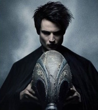
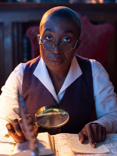
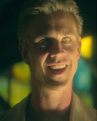
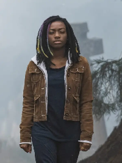

Série Televisiva de 2022. Produzida por DC Entertainment e Warner Bros. Production
Após anos aprisionado, Morpheus, o Rei dos Sonhos, embarca em uma jornada entre mundos para recuperar o que lhe foi roubado e restaurar seu poder.
Emissora Original: Netflix
Autores: Neil Gaiman, Mike Dringenberg, Sam Kieth, e outros
Gênero: Fantasia Sombria
Duração: 11 episódios, 1 temporada
| Personagem | Interpretado/a por | Descrição | Imagem | |
|---|---|---|---|---|
| Sonho | Tom Sturridge | Uma criatura antropomórfica que representa a materialização dos sonhos e que governa o Sonhar, lugar para o qual as almas de todos que dormem vão e onde as lembranças e pensamentos são eternamente guardados |
 | Voltar à lista |
| Lucienne | Vivienne Acheampong | Sua função primária é proteger a Biblioteca, que contém todos os livros de tudo o que já foi sonhado – incluindo os sonhos que nunca foram escritos |
 | Voltar à lista |
| Coríntio | Boyd Holbrook | O personagem é um pesadelo criado pelo Sonho que se tornou um serial killer viciado em matar por prazer. Apesar de ter uma aparência humana, ele possui dentes no lugar dos seus globos oculares, tornando a sua aparência um tanto assustadora |
 | Voltar à lista |
| Rose Walker | Kio Ra | A jovem Rose Walker foi para a Inglaterra com sua mãe para conhecer a misteriosa Unity Kinkaid. Após retornar da viagem, ela parte em busca de seu irmão desaparecido Jed. A natureza de sua família leva o Sonho a acompanhar essa jornada de perto. |
 | Voltar à lista |